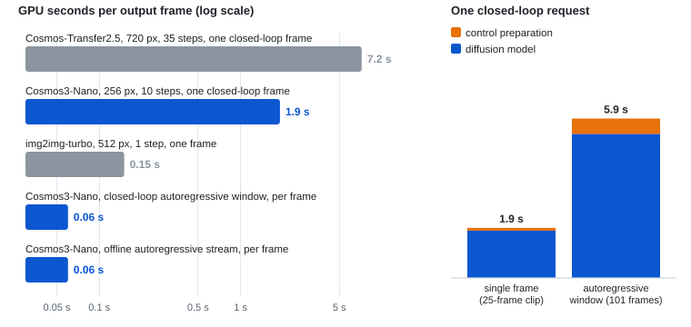
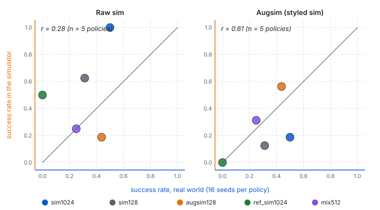
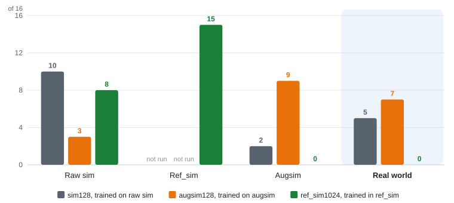
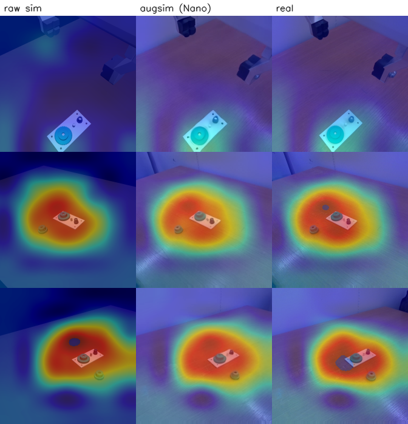
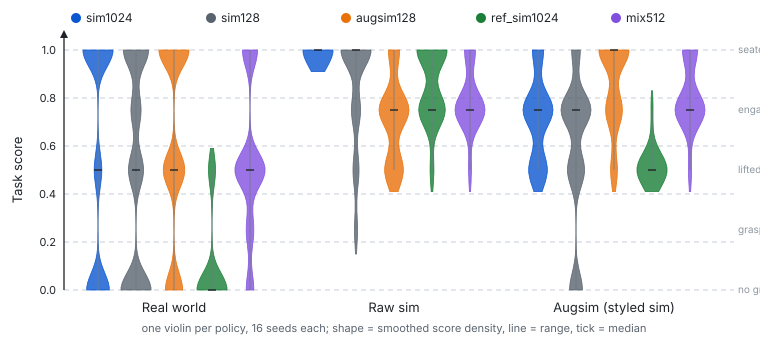
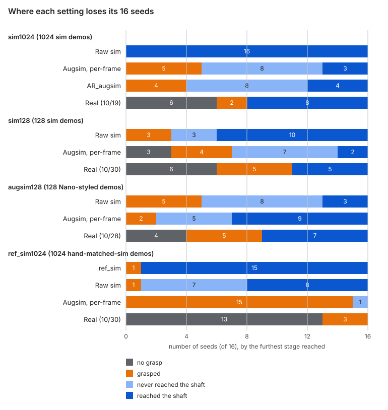

World Models for Sim2Real Style Transfer
Can a video world model fine-tuned on a few minutes of real-world video serve as the renderer of a physics simulator and bridge the rendering gap, making simulation realistic enough for policy evaluation and training? On tight-tolerance gear insertion, yes.
Summary
Ten minutes of real-world video are enough.
Fine-tuned on them, a video world model renders simulation realistically enough that simulated evaluation ranks policies as real-world evaluation does, and policies trained on its renderings transfer better than policies trained on native or manually calibrated renderings.
Setting. Physics stays in the simulator.
A video world model (Cosmos3-Nano), fine-tuned on real-world video from our cameras, renders what the policy sees.
We call this augmented simulation, or augsim.
Our task is tight-tolerance gear insertion with a Franka FR3, three cameras, and ACT policies trained by behavior cloning on scripted demonstrations.
Every policy runs on 16 fixed scenes in raw sim, in augsim, and in the real world.
Observe: raw sim stalls at the shaft; augsim and the real rollout both seat the gear.
Observe: raw sim grasps and seats the gear; in augsim and in the real world, fingers close beside the gear and the arm moves on without it.
Augsim reproduces the real failure mode.
1. Problem: rendering gap and dynamics gap
The sim-to-real gap has two components, a rendering gap and a dynamics gap.
We hold the dynamics gap as small as we can and ask whether a fine-tuned video world model can bridge the rendering gap, so that simulation becomes realistic enough for policy training and evaluation.
Rendering gap. Our first policy seated the gear in every simulated scene and in half of real ones.
When we compared three policies, raw sim ranked them in reverse of real-world order and would have selected a policy that never grasps a gear.
Manual appearance calibration did not help.
We matched table, lighting and camera response to real frames and randomized around them.
The resulting policy was our worst in the real world.
Real tables have wood grain; no randomized parameter produces texture.
A video world model conditioned on edges and depth does produce texture, keeps it consistent over time, and leaves geometry alone.
If a few minutes of real-world video adapt such a model to one scene, simulation inherits that scene's appearance.
This post tests whether that bridges the rendering gap.
Dynamics gap, held fixed. One simulator serves every condition: a port of the real robot's controller, signed-distance-field contacts, cameras from current calibration (section 2, appendix B).
What remains of the dynamics gap appears in section 6 as residual error.
2. Method: augmented simulation with a fine-tuned video world model
Simulation keeps state; the world model replaces only rendered observations.

Real-world calibration, a calibrated simulator, scripted demonstrations and ACT training (top row).
The world model renders the simulator's observations, so the same policy and scenes are evaluated in raw sim, in augsim and in the real world.
Terminology. Raw sim: the simulator's native rendering.
Augsim: simulation rendered through the adapted world model.
Ref_sim: a manually calibrated renderer with domain randomization.
| Component | Choice |
|---|---|
| Simulator | MuJoCo with a port of the real robot's Polymetis controller, signed-distance-field contacts for gear and shaft, cameras from current real-world calibration |
| Policy | ACT with three 224-pixel views and proprioception, predicting chunks of 100 joint targets at 30 Hz; behavior cloning on scripted full-insertion demonstrations |
| Real-world data | 20 scripted episodes recorded by three cameras, about ten minutes in total, disjoint from policy data |
| World model | Cosmos3-Nano (8 B parameters), post-trained at 256 pixels; conditioned on simulator-rendered edges and inverse depth with a fixed caption |
| Inference | Demonstration streams rendered autoregressively at 0.06 s per frame; in closed-loop evaluation each decision frame is rendered on its own in about 2 s while simulation waits |
| Protocol | 16 seeds fix gear placement; the same seeds run in raw sim, in augsim and in the real world; success is a fully seated gear |
Design alternatives rejected
- Control signals estimated from real video instead of rendered by the simulator: lower fidelity and hallucinated grippers.
- A segmentation control channel: gripper and gear merged.
- Training windows sampled from episode centers with a defective wrist mask: gears vanished from style-transferred frames.
Sampling windows across whole episodes fixed it.
3. Scene adaptation of the video world model
Ten minutes of real-world video adapt the world model to our scene.
It renders our table, lighting and gripper, and holds them steady across frames.

Leftmost group is the floor, one half of real data against the other.
Finding: adaptation halves the distance; the remainder is still about twenty times the floor.
Observe: middle column, table texture and gripper glare change from frame to frame; right column, they stay fixed while the arm moves.
3.1 Inference latency and optimization
Augmented simulation is only useful if rendering is cheap: every frame of every demonstration, every decision of a closed-loop evaluation.
Our first renderer, Cosmos-Transfer2.5 at 720 pixels and 35 denoising steps, needed 7 s per decision frame.
Four changes brought it down, in order of effect.
Fewer denoising steps, 35 to 10, matching the training data; the largest single gain, and it made closed-loop rendering consistent with training.
A smaller model at policy resolution, Cosmos3-Nano at 256 pixels.
Streams instead of frames: an autoregressive window amortizes per-request overhead, 0.05 s per frame against 1.8 s for a single decision frame.
Caching across denoising steps: cache_dit removes 14 percent of model time at 34 dB PSNR against uncached output.
Flash attention and torch.compile were already on.
Cosmos3 does not support request batching, so throughput scales only by one server per GPU.

Right: one closed-loop request split between control preparation and diffusion model.
Finding: autoregressive rendering at 256 pixels is two orders of magnitude cheaper than our first renderer; rendering 128 demonstrations became a matter of GPU-hours.
Control preparation is at most a tenth of a request.
The model is the cost, and a single decision frame still takes about 2 s.
We have not profiled inside the model; step count is the measured lever and per-step cost dominates.
One practical note: a rendering server sharing its GPU with a second evaluation process slowed from 1.9 s to about 5 s per request.
One server, one GPU.
Style transfer baselines
| Method | Outcome |
|---|---|
| Ref_sim (manual calibration and domain randomization) | Color and lighting close to real cameras after nine calibration rounds; no texture |
| Image-to-image translation (img2img-turbo) | Fast, but every frame re-samples texture; the stream flickers |
| Cosmos-Transfer2.5 without scene adaptation | Our first closed-loop renderer; geometry mostly preserved; a generic laboratory |
| Cosmos3-Nano, base model | Follows prompts (a red gear, sunset lighting) but renders a different scene |
| Cosmos3-Nano, post-trained on ten minutes | Halves per-frame distance to real cameras; loses prompt following |
4. Evaluation fidelity: does augmented simulation predict real-world performance?
Augsim is a reliable instrument for comparing policies.
It ranks them as real-world evaluation does and flags the one that fails.
It does not predict absolute success rates.
We evaluated five policies of different quality on the same 16 scenes under three conditions.
They differ in training observations and data size, which is what makes them a ranking test.
| Policy | Training observations | Demonstrations |
|---|---|---|
| sim1024 | raw sim | 1024 |
| sim128 | raw sim | 128 |
| augsim128 | augsim (Cosmos3-Nano) | 128 |
| ref_sim1024 | ref_sim with domain randomization | 1024 |
| mix512 | raw sim | 512, half of them recovery demonstrations |

Left raw sim, right augsim.
With 16 scenes, each coordinate carries about ±20 points.
Finding: raw-sim points scatter on both sides of the diagonal; augsim points lie nearer to it and in real-world order.
Ranking. Real-world evaluation ordered our three newer policies augsim128, sim128, ref_sim1024.
Augsim reproduced that order.
Raw sim reversed it and ranked first a policy that never grasped a gear in the real world.
Per-scene agreement. Augsim agreed with real outcomes on more scenes than raw sim for every policy except augsim128, whose training observations are themselves Cosmos3-Nano renderings.
Failure modes. Real rollouts fail before contact: fingers close beside the gear.
Raw sim fails late, at the shaft.
Augsim fails in between.
Neither reproduces real grasp misses, which come from camera calibration drift and arm settling (section 6).
Absolute rates are off in both simulators, in both directions.
Camera calibration used for each simulated evaluation
Every simulated number was measured before its real-world test, with the camera calibration that policy was trained and evaluated with.
For sim1024 that is its own calibration (round 27b); its augsim evaluation is the exception, run after the real-world test with recalibrated cameras (round 29).
Our three newer policies were trained and evaluated under round 29 throughout. mix512 is an earlier policy (October 13): its sim and augsim evaluations warp cameras to that day's real poses, and its augsim used Cosmos-Transfer2.5, our renderer before Cosmos3-Nano.
5. Training transfer: policies trained on style-transferred observations
Augsim also works as a training space.
Same demonstrations, rendered through the world model, give a policy that transfers better than raw or manually calibrated rendering.
Three policies share one recipe and one real-world test: 16 scenes, same cameras and placements, within two days.
sim128, the control, trained on raw sim.
augsim128, the treatment, trained on the same frames rendered autoregressively by Cosmos3-Nano.
ref_sim1024, the manual-calibration alternative, trained on 1024 demonstrations rendered in ref_sim with domain randomization and image augmentation.

Finding: each policy is best under its own training appearance.
Only the shaded group matters, and augsim is the only simulated condition whose bars resemble it, including ref_sim1024's zero.

Columns: real world, raw sim, ref_sim, three domain-randomization samples.
Rows: three cameras.
Finding: ref_sim matches color but has no wood grain; randomized samples vary lighting and tint, never texture.
A policy trained there learns to locate gears against a plain table and closes beside them in the real world.
Observe: the right gripper closes two to three centimeters beside the gear.
6. Mechanism: how appearance transfer changes policy outputs
From a style-transferred frame, the policy predicts almost the same action chunk as from the real frame.
Style transfer changes what the policy reads, not where it looks.
Real-world rollouts store every observation the policy consumed and the joint state at every decision.
Before the first grasp, the scene is still the seed's layout, so we place the simulated arm at the measured state, render, apply style transfer, and compare action chunks predicted from raw, style-transferred and real observations: 128 matched states over four policies.

Gray: raw sim.
Blue: style-transferred.
Orange: same frame style-transferred twice, the noise floor.
Light gray: raw frame one second later, the scale of real motion.
Finding: style-transferred frames sit on the noise floor; raw frames sit far above it.
Where versus what. Attention lands on the same regions in all three observations.
Feature content at those regions differs, and table, background and gripper carry the difference, not gears.

Finding: the three attention maps are nearly identical, yet the chunk predicted from the raw frame lies 37 mm from the real-observation chunk and the style-transferred one 3 mm.
Attention is not what changed.

Finding: swapping attention closes about a fifth of the gap; swapping features closes half to two thirds.

Blue: distance between chunks predicted from raw and style-transferred frames at each decision.
Orange: distance between the two resulting trajectories.
Finding: divergence is created at the first decision; afterwards chunks agree, but the arm is already on a different path.
What rendering cannot fix. Replaying eight successful real-world action sequences open-loop in simulation gave eight grasps and two seatings.
Simulated tool center drifts by millimeters from the real one, and sub-millimeter insertion does not tolerate millimeters.
Observe: a discrepancy of a few millimeters, and the simulated gear stopping above the shaft.
7. Conclusions, limitations and future work
On this task, a world model fine-tuned on ten minutes of real-world video turns simulation into a realistic space for policy evaluation and training.
Geometry and dynamics errors remain.
Conclusions, for this task and setup.
- Evaluation. Augsim ranks policies in real-world order and identifies which one will fail.
It does not estimate success rates. - Training. Policies trained on style-transferred demonstrations transferred better than policies trained on raw or manually calibrated renderings: a direction measured on 16 scenes, not an effect size.
- Mechanism. Style transfer changes image features the policy reads, not regions it attends to.
- Residual gap. Remaining real-world failures are not visual.
Camera drift of a fraction of a degree displaces a grasp by a centimeter, and the arm settles millimeters from its commanded pose.
Limitations.
- 16 scenes per condition, one task, one setup, one recording session for the model's real data.
- Per-frame style transfer in the closed loop flickers, and 2 s per frame precludes online use.
- The adapted model renders the same image for every prompt.
Prompt following, which RoboRender uses to randomize textures and distractors, is lost. - Each camera is rendered independently; multi-view consistency is not enforced.
- Rendering stays faithful under camera perturbations up to about 20 degrees and 20 centimeters while the view stays on the table.
Once the view includes robot pedestal or floor, the model hallucinates a plausible laboratory.
Future work.
- A state-based teacher policy that solves the task in simulation, distilled into a visuomotor student on style-transferred observations.
- Renderer selection by learning outcome rather than visual fidelity: fine-tune clones of one policy briefly on the same states rendered by each candidate and keep the renderer whose action error on real observations falls fastest.
- The training comparison repeated at 512 to 1024 demonstrations with checkpoint selection in augsim.
- A model of arm settling error in the simulator.
Appendix
A. Per-scene outcomes
Each cell is the furthest stage reached: no grasp, grasped, lifted, engaged (on the shaft), or seated.

Finding: raw sim loses scenes late, where real rollouts lose them early; the augsim distributions lie closer to the real ones.
sim1024, 16 scenes: raw sim, augsim, real world
| Seed | Raw sim, its cameras (round 27b) | Raw sim, recalibrated after the test (round 29) | Augsim (round 29) | Real world |
|---|---|---|---|---|
| 1000000 | seated | seated | engaged | no grasp |
| 1000001 | seated | seated | seated | seated |
| 1000002 | seated | seated | lifted | no grasp |
| 1000003 | seated | seated | lifted | lifted |
| 1000004 | seated | seated | lifted | no grasp |
| 1000005 | seated | engaged | engaged | lifted |
| 1000006 | seated | seated | seated | seated |
| 1000007 | seated | engaged | lifted | seated |
| 1000008 | seated | engaged | engaged | seated |
| 1000009 | seated | engaged | engaged | seated |
| 1000010 | seated | seated | engaged | no grasp |
| 1000011 | seated | seated | engaged | seated |
| 1000012 | seated | engaged | engaged | seated |
| 1000013 | seated | seated | engaged | seated |
| 1000014 | seated | seated | seated | no grasp |
| 1000015 | seated | seated | lifted | no grasp |
| Seated | 16/16 | 11/16 | 3/16 | 8/16 |
sim128 and augsim128, 16 scenes
| Seed | sim128: raw sim | sim128: augsim | sim128: real world | augsim128: raw sim | augsim128: augsim | augsim128: real world |
|---|---|---|---|---|---|---|
| 1000000 | seated | engaged | lifted | seated | engaged | seated |
| 1000001 | engaged | engaged | lifted | engaged | lifted | lifted |
| 1000002 | lifted | lifted | no grasp | lifted | engaged | lifted |
| 1000003 | seated | seated | seated | engaged | seated | seated |
| 1000004 | seated | engaged | no grasp | engaged | lifted | no grasp |
| 1000005 | engaged | lifted | no grasp | lifted | seated | lifted |
| 1000006 | seated | no grasp | seated | engaged | seated | seated |
| 1000007 | grasped | no grasp | seated | lifted | engaged | seated |
| 1000008 | seated | lifted | no grasp | lifted | seated | no grasp |
| 1000009 | seated | engaged | seated | engaged | seated | no grasp |
| 1000010 | seated | no grasp | no grasp | seated | seated | lifted |
| 1000011 | seated | engaged | pre-insert | engaged | seated | seated |
| 1000012 | lifted | lifted | pre-insert | engaged | engaged | lifted |
| 1000013 | seated | seated | seated | seated | seated | seated |
| 1000014 | engaged | engaged | no grasp | engaged | engaged | seated |
| 1000015 | seated | engaged | lifted | lifted | seated | no grasp |
| Seated | 10/16 | 2/16 | 5/16 | 3/16 | 9/16 | 7/16 |
mix512, 16 scenes: raw sim, augsim, real world
| Seed | Raw sim (cameras warped to the real poses) | Augsim (Cosmos-Transfer2.5) | Real world |
|---|---|---|---|
| 1000000 | engaged | engaged | seated |
| 1000001 | engaged | engaged | lifted |
| 1000002 | engaged | seated | no grasp |
| 1000003 | engaged | engaged | grasped |
| 1000004 | engaged | seated | lifted |
| 1000005 | engaged | engaged | lifted |
| 1000006 | engaged | seated | seated |
| 1000007 | seated | engaged | lifted |
| 1000008 | seated | engaged | lifted |
| 1000009 | seated | seated | seated |
| 1000010 | lifted | engaged | grasped |
| 1000011 | engaged | seated | seated |
| 1000012 | seated | engaged | pre-insert |
| 1000013 | engaged | engaged | pre-insert |
| 1000014 | engaged | engaged | no grasp |
| 1000015 | engaged | lifted | lifted |
| Seated | 4/16 | 5/16 | 4/16 |
Per-scene agreement with the real-world outcome
| Policy | Raw sim | Augsim |
|---|---|---|
| sim1024 | 8/16 (predicts every scene seated, κ 0) | 9/16 (κ 0.13) |
| sim128 | 9/16 (κ 0.20) | 13/16 (κ 0.48) |
| augsim128 | 10/16 (κ 0.19) | 8/16 (κ 0.02) |
| ref_sim1024 | 8/16 | 16/16 |
| mix512 | κ 0.00 | κ 0.54 |
| Pooled, three newer policies | 27/48 (κ 0.07) | 37/48 (κ 0.37) |
B. Failure-stage analysis and sim-to-real calibration
Real rollouts lose scenes to empty grasps; the simulators lose them later, at the shaft.

Finding: real-world rows are dominated by gray; simulated rows are dominated by light blue.
Calibration and modeling fixes by stage
| Stage | Problem found | Fix | Residual |
|---|---|---|---|
| Camera calibration | The cameras moved often; stale poses caused grasp misses | 29 calibration rounds; calibration versioned with each policy | A 0.28-degree drift still displaces the grasp by 5 to 14 mm |
| Controller | A policy that was perfect in simulation failed in the real world: different control law | Port of the real Polymetis controller into the simulator | The real arm settles about 3 mm from its command; 6.75 mm RMS tracking error |
| Collision geometry | Whole-mesh distance fields: false penetration, drifting gear | Split fields, segmented shafts, no contact heuristics | Drift in micrometers, penetration under 0.02 mm |
| Hand payload | Mount reconstructed from video | Mesh reconstruction | Modelled 81 g against 177 g real |
| Gripper | Grasp gate against a 29 mm stall; integrator windup | Settle gate; event-style gripper action | Hysteresis and 5 N force matched |
| Initial state | Real scenes did not match the simulated scenes until October | Seeds from the simulator's nominal poses; overlay placement | Placement error not measured |
| Timing | 60 Hz evaluation against 30 Hz demonstrations; slow simulated gripper | Cadence fix; retimed hand; recollected demonstrations | Real cameras lag about 5 frames |
| Rendering | Raw sim differs strongly from the cameras | Cosmos3-Nano rendering | About 20 times the real-vs-real distance |
Policy learning approaches evaluated before behavior cloning
Plain behavior cloning on clean full-insertion demonstrations outperformed every addition we tried.
| Approach | Best result | Reason for stopping |
|---|---|---|
| Staged state-based PPO | 94.5 percent on the chained task | Never distilled to vision under realistic gripper physics |
| SERL / RLPD visuomotor RL | 0 percent in three runs | No signal from the sparse reward |
| Residual PPO on ACT | 53 to 66 percent, did not replicate | Exploration noise larger than the 0.5 mm clearance |
| Reverse-curriculum PPO teacher | 78 percent | Local optimum; grasp-gate defects |
| Teacher-student distillation | 37.5 percent | Plateau, then a dataset bug |
| DAgger with the scripted expert | 18 of 32 to 29 of 32 in round one | Later rounds collapsed: a physics hook broke the expert |
| Residual PPO on the ported simulator | 69 to 77 percent, flat | 1.4 s per environment step |
| Behavior cloning, 1024 demonstrations | 29 of 32 in simulation, 8 of 16 in the real world | Remaining failures are pre-contact in the real world |
C. Style transfer baselines: inference latency
Latency by renderer and mode
| Renderer and mode | Latency |
|---|---|
| Cosmos3-Nano, autoregressive stream, 121-frame chunks | 0.057 to 0.064 s per frame; 128 demonstrations times three cameras in 2.7 h on one GPU |
| Cosmos3-Nano, closed-loop decision frame, per-frame | about 2.0 s |
| Cosmos3-Nano, closed-loop decision frame, autoregressive 101-frame window | 6.2 s per window |
| Cosmos3-Nano, closed-loop decision frame with the rendering server sharing its GPU with a second evaluation process | about 5 s |
| Cosmos-Transfer2.5, 35 steps, 720 pixels | 3.6 s per frame (7.2 s in the closed loop) |
| img2img-turbo, 1 step, 512 pixels | 0.148 s per frame |
Most of the speed-up came from reducing the sampling steps from 35 to 10, then from caching the transformer's attention (cache_dit, 14 percent faster at 34 dB PSNR against the uncached output).
D. Robustness of the adapted model to camera perturbation and prompts
Two tests on one scene, with the right static camera and the wrist camera:

Finding: the gears stay where the rendering places them; no gear is hallucinated or dropped.
The fingers occasionally appear as hooks.

Base model on the left, adapted model on the right.
Finding: the base model changes the gear color and the lighting; the adapted model renders the same image four times.
Neither adds the mug, which has no edges or depth in the rendering.
E. Image and video fidelity metrics
Metric values per camera
Kernel Inception Distance and Fréchet DINOv2 distance per frame, Fréchet Video Distance on 16-frame clips, all at 224 pixels against the real frames of the sim1024 rollouts.
The floor is one half of the real scenes against the other.
| Source (wrist / right / left camera) | KID × 1000 | FD-DINOv2 | FVD |
|---|---|---|---|
| Real world, other half (floor) | 4.6 / 2.8 / 4.5 | 66 / 75 / 93 | 154 / 47 / 131 |
| Raw sim | 233 / 168 / 155 | 1531 / 2044 / 2090 | 1803 / 700 / 1038 |
| Ref_sim | 175 / 185 / 171 | 1472 / 1574 / 1505 | 1215 / 491 / 683 |
| Cosmos3-Nano, per-frame decision frames | 78 / 87 / 73 | 539 / 968 / 894 | — |
| Cosmos3-Nano, autoregressive stream | 80 / 90 / 100 | 551 / 964 / 977 | 713 / 255 / 441 |
F. Comparison with RoboRender
RoboRender (Huang, Ai, Li Fei-Fei, Jiajun Wu and others, October 2026) asks whether a video model can make simulated data good enough to train real-world policies at scale, and answers yes for visually driven tasks.
This project asks how little real data is sufficient, whether a style-transferred simulator can evaluate a policy, and what remains when the task is contact-rich.
| RoboRender | This project | |
|---|---|---|
| Base model | Wan2.1-T2V-1.3B | Cosmos3-Nano 8B |
| Real training data | about 127k samples from AgiBot-World and DROID | 20 episodes, one setup |
| Conditioning | Simulated depth, robot RGB and mask, a scene prompt, the preceding frame | Edges and depth, fixed caption, autoregressive |
| Multi-view | Views stacked into one latent | Each camera rendered independently |
| Prompt following | Kept | Lost after fine-tuning |
| Use of the renderer | Train a policy on rendered simulation, test in the real world | Evaluate policies in the style-transferred simulator; train on it at 128 demonstrations |
| Tasks | Pick-and-place, drawer, fridge, mobile pick | Tight-tolerance gear insertion |
G. Reproducibility
Scripts, logs and result directories
| Result | Source |
|---|---|
| Raw-sim and augsim evaluations | jobs/sim_eval_mrc.sbatch, jobs/augsim_nano_eval.sbatch (AR=1 for the autoregressive loop) |
| Real-world evaluations | wmrl/eval-logs/real_eval_20261019.md (sim1024), real_eval_20261013.md (mix512), real_eval_20261028_nano128_24k.md (augsim128), real_eval_20261030_raw128_20k.md (sim128), real_eval_20261030_refsim_52k.md (ref_sim1024) |
| Fidelity metrics | jobs/realism_metrics.py |
| Replay, first-decision and layer probes | jobs/divergence_probe.py, jobs/consumed_regen.sbatch, jobs/act_layerwise.py |
| Flicker and the autoregressive loop | jobs/ar_vs_perframe.py; augsim/infer/nano_mrc_server.py (NANO_AR=1), augsim/t25/closed_loop.py |
| Training on style-transferred demonstrations | jobs/act_style128_lanes.sh, jobs/demo_nano_src.py, jobs/style128.sbatch, jobs/assemble_parts.py |
| Ref_sim | wmrl/wmrl/sim/mrc_gear/ref_sim.py, jobs/act_refsim_lanes.sh |
| Robustness tests | jobs/nano_limits.py; camera-pose and exit-reentry study jobs/nano_campose.py, results in wmrl/docs/nano_campose/ |
| Inference latency | augsim/infer/nano_mrc_server.py (request_timings.jsonl per run); jobs/nano_profile.sbatch |
| Matched-state analysis | jobs/e12_where_what.py, jobs/e12_where_what.sbatch; results in wmrl/docs/wrapup/e12/ |
| Figures and videos | jobs/gap_attribution.awk, jobs/combine_videos.py, jobs/real_vs_sim_figs.sh; per-scene TSVs in wmrl/docs/wrapup/ |